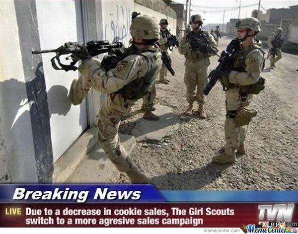

Gesticht in het jaar 1643 zijn wij het oudste koekjes bedrijf ter wereld.
Onze koekjes zijn zo lekker dat wij in 1730 minder moesten gaan verkopen omdat het anders niet eerlijk was voor de andere koekjesverkopers.
Sinds 1810 zijn wij ook scouts gaan inzetten om koekjes te verkopen.
Hiermee zijn wij in 1890 gestopt door de grote "Koekjes Oorlog" waardoor 2.000.000 scouts om het leven kwamen in een gevecht met onze toendertijds nieuwe "kogel koekjes".
In 1980 zijn wij weer begonnen met het inzetten van scouts en hebben in 2008 een nieuwe manier van verkopen ingevoerd.
Hierdoor hebben wij veel media aandacht gekregen door nieuws kanalen van over de hele wereld.
